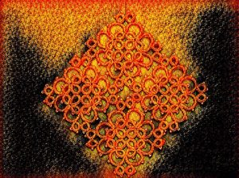

The following is the final installment of a three-part series. The first one can be found here, the second one here.
As Julia Reinhard Lupton argues, Shakespeare’s Caliban complicates our sense of what it means to be a creature or creaturely. “The world of creatures,” Lupton posits,[1]
constitutes an infinity rather than a totality, since it is made up of a series of singularities that do not congeal into a single set…By maintaining Caliban as creature, Shakespeare manages to isolate within the category of the human…a permanent state of emergency. As such, the creature materializes a profane moment within the idealism of theology, and thus defines in its very primitivism a possible face of modernity, understood not as the negation but as the remainder of a theological vision. If we want to find a new universalism in the play…it is not by reasserting that “Caliban is human,” but rather by saying that ‘all humans are creatures,’ that all humans constitute an exception to their own set… [Shakespeare’s] decisive crystallization of a certain material moment within the theology of the creature might help us find a postsecular solution to the predicament of modern humanity.
The fleshy heresy of Auden’s Patripassianism[2] intensifies Lupton’s appeal for us to discern in the creature a profane materiality “within the idealism of theology.” For, if Auden draws his creaturely Christ across For the Time Being’s compositional and textual margin into Caliban’s realm, then both “the theological vision” and the religious “remainder” at stake are doubly heterodox: creaturely life, in Auden’s materialist sense, becomes a definitive part of theology’s idealism, rather than the latter’s residue in the secular “face of modernity.”
As Auden would remind us, the Trinity and humanity do retain an ultimate distinction, but both still heretically partake of each other on the grounds of incarnated embodiment.[3] Thus, Auden leads us to adapt one of Eric Santner’s exquisite points: “Creature” is indeed “the signifier of an ongoing exposure, of being caught up in the process of becoming creature through the dictates of divine alterity”;[4] yet it is also, in my reading of For the Time Being, a heretical reversal of this exposure or becoming creature—from the creaturely toward the divine, or creaturely-divine.
In this exegetical vein, consider how in “The Sea and the Mirror” Caliban-the-Body and Ariel-the-Spirit relate to one another, particularly in “Chapter III: Caliban to the Audience” and in the “Postscript (Ariel to Caliban. Echo by the Prompter).” At a key point in Chapter III, Auden articulates Caliban as “the voice of the inarticulate flesh”[5] by focusing precisely on what would occur if we “really left [him] alone to go [his] whole “free-wheeling way to disorder, to be drunk every day before lunch, to jump stark naked from bed to bed, to have a fit every week or a major operation every other year, to forge cheques or water the widow’s stock.”[6]
Without sufficient discipline and punishment, Caliban’s bodily impulses turn to regular intoxication, sexual promiscuity, emotional breakdowns, mischief, self-harm, and even a few indictable counts of forgery. Through such “genuine escapades,” Caliban-the-Body “might, after countless skids and punctures, have come by the bumpy third-class road of guilt and remorse.”[7] From this perspective of sheer anti-ascetic indulgence, however, corporeality’s “free-wheeling way to disorder” might seem preferable to the havoc of attempting to regulate or structure the wild interplay of Caliban-the-Body and Ariel-the-Spirit, or Artistic Imagination. Auden’s Caliban asks whether it is possible[8]
that, not content with inveigling Caliban into Ariel’s kingdom, you have also let loose Ariel in Caliban’s? We note with alarm that when the other members of the final tableau [i.e. of characters from The Tempest] were dismissed, He [Ariel] was not returned to His arboreal confinement as He should have been. Where is He now? For if the intrusion of the real has disconcerted and incommoded the poetic, that is a mere bagatelle compared to the damage which the poetic would inflict if it ever succeeded in intruding upon the real. We want no Ariel here, breaking down our picket fences in the name of fraternity, seducing our wives in the name of romance, and robbing us of our sacred pecuniary deposits in the name of justice. Where is Ariel? What have you done with Him? For we won’t, we daren’t leave until you give us a satisfactory answer.
Auden’s comedic effects in this passage hinge on the litotes he reserves for visions of Ariel’s intrusions “upon the real” of everyday corporeal life. As indicated by the excerpt from “Squares and Oblongs” tendered above, Auden’s ultimate sense of the “damage which the poetic would inflict if it ever succeeded in intruding upon the real” is not limited to suburban white-picket-fence-breaking, the seduction of others’ wives, and the well-intentioned escapades of Robin Hood. Indeed, for Auden the poetic’s intrusion upon a resistant reality is tantamount to the Schillerian aesthetic state in its violent, propagandistic, mid-twentieth-century incarnations.
Nevertheless, for Caliban-the-Real or Caliban-the-Body, the intrusive threat of Ariel’s aesthetic state is hardly omnipresent. In fact, from the viewpoint of Auden’s Caliban and thus in contradistinction to Robert Browning’s “Caliban upon Setebos,” the real body maintains a literal upper hand over the self-theologizing poetic spirit, precisely because it always-already brandishes the tain of the mirror that supports both the artist’s reflection of herself and her reflection of nature in art.[9] The artist’s transformative moment, in moving from glassy surface to wiry tain, is “indicative at least of one aspect of the relation between the real and the imagined, their mutual reversal of value”;[10] for, by realizing in ethical terms that embodiment, in whatever form or to whatever extent, predicates the abstract vistas of aesthetic production, the artist yields to an interpenetration and revaluation of existential spheres.
In “Caliban to the Audience,” this transformative moment occurs when the artist, much like Prospero in The Tempest, wishes finally to extricate herself from the lush proceedings of Ariel’s lofty aesthetics:[1]
Collecting all your strength for the distasteful task, you finally manage to stammer or shout ‘You are free, Good-bye,’ but to your dismay He whose obedience through all the enchanted years has never been less than perfect, now refuses to budge. Striding up to him in fury, you glare into His unblinking eyes and stop dead, transfixed with horror at seeing there, not what you had always expected to see, a conqueror smiling at a conqueror, both promising mountains and marvels, but a gibbering, fist-clenched creature with which you are all too familiar, for this is the first time indeed that you have met the only subject that you have, who is not a dream amenable to magic but the too solid flesh you must acknowledge as your own; at last you have come face to face with me, and are appalled to learn how far I am from being, in any sense, your dish; how completely lacking in that poise and calm and all forgiving because all understanding good nature which to the critical eye is so wonderfully and domestically present on every page of your published inventions.
Ariel’s eyes figure here as the artist’s mirror, wherein the she sees her embodied self—“the all too solid flesh you must acknowledge as your own”[12] as opposed to “the dark thing you could never abide to be with”[13]—as the unglamorous corporeal tain without which the mirror of art would come crashing to the floor. Caliban’s self-deprecating language throughout the excerpt gauges the artist’s creaturely recognition of her own embodiment as irreducible to “that poise and calm” by which her “published inventions” are aestheticized.
Ironically, however, the apparent chasm between Ariel and Caliban turns out to be a figment of the artist’s former enchantment with the claims of aesthetic splendor and consequent shock at (re)discovering her own “all too solid flesh”: in other words, the artist is Caliban-the-Body or Caliban-the-Real, a jolting perception that stems from the reflective gaze of Ariel-the-Spirit or Ariel-the-Poetic. A logical circuit thus governs this moment, for there is no artist and thus no art without the real body; and no real body without the imagination’s capacity to configure a world in which to be real.
Ariel’s understated response to Caliban in the commentary’s “Postscript” reinforces this circuitry: the poetic spirit is “Helplessly in love” with the real body and “Fascinated by / Drab mortality”;[14] Ariel’s aesthetic “perfection” harbors an “entire devotion” to “the mercy of [Caliban’s corporeal] will”;[15] and when the dissonant “falsehoods” of both “sworn comrade[s]” are “divided,” they “shall become, / One evaporating sigh.”[16] To paraphrase Auden’s Ariel via T.S. Eliot in Four Quartets: in death “body and soul begin to fall asunder,”[17] leading to a literal expiration of their anxious Kierkegaardian synthesis. Backed by the mirror’s tain and thus allegorically by For the Time Being’s porous margin, the circuitry that links Caliban and Ariel is at once material and abstract, bodily and spiritual, aesthetic and religious—but only if we read For the Time Being as the singular book that it is.
“Religion and culture,” Auden’s Caliban baroquely speculates, “seem to be represented by a catholic belief that something is lacking which must be found:
…but as to what that something is, the keys of heaven, the missing heir, genius, the smells of childhood, or a sense of humour, why it is lacking, whether it has been deliberately stolen, or accidentally lost or just hidden for a lark, and who is responsible, our ancestors, ourselves, the social structure, or mysterious wicked powers, there are as many faiths as there are searchers, and clues can be found behind every clock, under every stone, and in every hollow tree to support all of the them.[18]
If read in the context of For the Time Being, and thus across the threshold that simultaneously configures and separates “For the Time Being” and “The Sea and the Mirror,” this passage affords a textual “clue” as to what is lacking among “religious” and “cultural” (or aesthetic) approaches to two of Auden’s major long poems. In my interpretation of For the Time Being as an intra-related book, the mutual unraveling of the oratorio’s Perfect Religious State and the commentary’s Perfect Aesthetic State pivots nimbly on what Auden’s Caliban loquaciously identifies as the “first big crisis” of disenchantment:
…the breaking of the childish spell in which, so long as it enclosed you, there was, for you, no mirror, for everything that happened was a miracle—it was just as extraordinary for a chair to be a chair as for it to turn into a horse; it was no more absurd that the girding on of coal-scuttle and poker should transform you into noble Hector than that you should have a father and mother who called you Tommy—and it was therefore only necessary for you to presuppose one genius, one unrivalled I to wish these wonders in all their endless plenitude and novelty to be, is, in relation to your present, behind, that your singular transparent globes of enchantment have shattered one by one, and you have now all come together in the larger colder emptier room on this side of the mirror which does force your eyes to recognize and reckon with the two of us, your ears detect the irreconcilable difference between my reiterated affirmation of what your furnished circumstances categorically are, and His successive propositions as to everything else which they conditionally might be.[19]
Unfastening the mirror’s tain, pure aestheticism’s bejeweled “childish spell”—whereby imaginative abstraction is unaccountable to ethical distinctions between “noble Hector” and veritable “Tommy”—shatters as “transparent globes of enchantment.” Consequently, standing cautiously (hopefully with close-toed shoes) among the shards, we behold the fallen tain “in the larger colder emptier room on this side of the mirror.” In this drafty space, where our sudden detachment from aestheticized images of ourselves is precisely as large, cold, and empty as the room that supported the mirror’s dusty tinfoil and wire, Caliban-the-Body’s “furnished circumstances” of being and Ariel-the-Spirit’s “successive propositions” of subjunctive becoming achieve a “restored relation.”[20]
This relation, I have argued, is set further into relief if we trace the margin that simultaneously crosshatches and singularizes “The Sea and the Mirror” and “For the Time Being.” Situated on this border between two interdependent states, peering through “secular blur” of “our contrived fissures of mirror and proscenium arch,”[21] we may parse For the Time Being as a particularly “fruitful / Island in the sea” of Auden’s oeuvre. For, as a continuous book that as such is continuously overlooked, For the Time Being tenders a poetics wherein religious and aesthetic states of “flesh and mind / Are delivered from mistrust.”[22]
Raji Singh Soni holds a PhD in English from Queen’s University and teaches courses on contemporary world literature, literature of the South Asian diaspora, and violence in society at universities in Toronto. He is also Theory Colloquium Editor of Sikh Formations: Religion, Culture, Theory. Based in Princeton University’s archive of Derrida’s personal library, Soni’s current research project is supported by grants from Friends of Princeton University Library and NeMLA. He has published articles on “A Political Economy of the Humanities: Turning Tables with Marx and Kant” in Australian Humanities Review 59 (2016); “The Sleep of Christ: Incarnation and the Queerness of Heresy in W.H. Auden’s ‘For the Time Being” in Religion and the Arts 18.4 (2014); “Rethinking the Universal Secular Intellectual with Kant, Derrida, and Spivak” in Culture and Religion 14.2 (2013); and “Framing the Transnational Violence of Air India Flight 182” in TOPIA 27 (2012).
______________________________________________________________________________________________
[1] Julia Reinhard Lupton, Citizen-Saints: Shakespeare and Political Theology (Chicago: University of Chicago Press, 2005), 178.
[2] Soni, “The Sleep of Christ,” 556-62.
[3] Ibid., 549-53; 566-67.
[4] Santner, On Creaturely Life: Rilke, Benjamin, Sebald (Chicago: University of Chicago Press, 2006), 28.
[5] Mendelson, “The Body,” in W.H. Auden in Context, ed. Tony Sharpe (Cambridge: Cambridge University Press, 2013), 198. See also on this point Herman Servotte, “Auden’s Caliban: Man’s ‘Drab Mortality,’” in Constellation Caliban: Figurations of a Character, ed. Nadia Lie and Theo D’haen (Amsterdam: Rodopi, 1997), 199-210.
[6] Auden, For the Time Being, 45-46.
[7] Ibid., 46. Emphasis added.
[8] Ibid., 40-41.
[9] Vaughan and Vaughan point out that Browning’s “Caliban is an amphibian—half man, half fish—who lives on the margins of humanity but reveals essential human traits such as selfishness and self-deception. Browning’s poem, a satire on Victorian [natural] theologians, describes the conception of God that might occur to a less-than-human creature. Caliban judges his god Setebos by himself; if he is capricious with crabs on the beach—sometimes ignoring them, sometimes cruelly toying with them—so must Setebos be cruel and capricious, favoring Prospero for no reason…Browning concludes his poem in resignation, observing that the best way to escape Setebos’ ire ‘Is, not to seem too happy’” (109-10). See lines 257-62, where Browning’s Caliban “‘Sees, himself, / Yonder two flies, with purple films and pink, / Bask on the pompion-bell above: kills both. / ‘Sees two black painful beetles roll their ball / On head and tail as if to save their lives: / Moves them the stick away they strive to clear.” Browning, “Caliban upon Setebos,” Poetry Foundation, https://www.poetryfoundation.org/poems-and-poets/poems/detail/43748. Browning’s Caliban performs the capriciousness he attributes to Setebos, thereby aligning humanity and divinity via the aesthetic formulism of analogy (via analogia as opposed to via negativa). By advancing a materialist challenge to aestheticism’s unchecked, theologizing spirit and will-to-power, Auden’s Caliban affords a rather non-self-deceiving counterpoint to Browning’s Shakespearean persona.
[10] Auden, For the Time Being, 39.
[11] Ibid., 44. Emphasis added.
[12] Ibid., 44.
[13] Ibid., 46.
[14] Ibid., 59.
[15] Ibid., 59.
[16] Ibid., 59-60.
[17] Eliot, Complete Poems & Plays (London: Faber and Faber, 2004), 194.
[18] Auden, For the Time Being, 54.
[19] Ibid., 47-48.
[20] Ibid., 58.
[21] Ibid.
[22] Ibid.